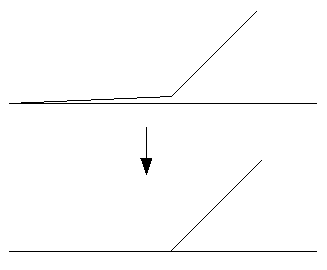

The break tool breaks lines/boundaries at intersections and it also breaks lines/boundaries forming a collapsed loop. For example, 0.0;1.0;0.0 is broken at 1.0.
Threshold does not apply (it is ignored), use an arbitrary value (e.g., 0) if v.clean is run with several tools.
Hint: Breaking lines should be followed by removing duplicates, e.g. v.clean ... tool=break,rmdupl. If the -c flag is used with v.clean ... tool=break, duplicates are automatically removed.
The rmdupl tool removes geometry features with identical coordinates. Categories are merged. If a point and a centroid have identical coordinates, one of them will be removed if both points and centroids are selected with v.clean ... type=point,centroid. The same applies for lines and boundaries.
Threshold does not apply (it is ignored), use an arbitrary value (e.g., 0) if v.clean is run with several tools.
The rmdupl tool should be used after breaking lines and breaking polygons.
A line/boundary is considered to be a dangle if no other line of given type is on at least one end node. If a dangle is formed by several lines, such a string of lines is taken as one dangle and line lengths are summarized. The rmdangle tool deletes a dangle if the (combined) length is shorter than thresh or thresh < 0. If the combined length is larger than thresh, nothing is deleted.
Threshold has to be given as maximum line/boundary length in map units; for latitude-longitude locations in degree. Dangles shorter than thresh are removed sequentially. All dangles will be removed if thresh < 0.
With thresh < 0, only closed loops and lines connecting loops will remain. This is useful to remove all incorrect boundaries after other cleaning operations with thres is < 0. Areas can then be successfully built.
To preferentially remove shortest dangles first, a first pass with a small thresh value can be followed by subsequent passes with higher thresh values. This can be done as one v.clean job by listing the tool several times and by defining a list of increasing thresh values.
The chdangle tool is similar to the rmdangle tool, but works only on boundaries and changes dangling boundaries to lines instead of removing them.
A bridge is an area type connection of an island (polygon in a polygon) to the outer polygon. This is topologically incorrect (but OGC Simple Features allow it). The rmbridge tool removes bridges and the chbridge tool changes bridges to type line:
+-------------+ +-------------+ +-------------+
| P| P: polygon | P| | P|
| +---+ | I: island | +---+ | | +---+ |
| | I | | B: bridge | | I | | | | I | |
| | | | L: line | | | | | | | |
| +-+-+ | | +---+ | | +-.-+ |
| | | | | | . |
| | B | | | | . L |
| | | | | | . |
+------+------+ +-------------+ +-------------+
Islands and areas must be already clean, i.e. without dangles or small angles, e.g. v.clean ... type=boundary tool=rmdangle,rmsa,break,rmdupl,rmbridge thresh=-1,0,0,0,0.
Threshold does not apply (it is ignored), use an arbitrary value (e.g., 0) if v.clean is run with several tools.
The snap tool snaps vertices to another vertex not farther away than thresh. If there is no other vertex within thresh, no snapping will be done. The type option can have a strong influence on the result. A too large threshold and type=boundary can severely damage area topology, beyond repair.
Threshold gives maximum distance to another vertex in map units, for latitude-longitude locations in degree.
Snapped boundaries may need to be cleaned with break,rmdupl,rmsa. If the -c flag is used with v.clean tool=snap, the sequence of break,rmdupl,rmsa is automatically repeated after snapping until no more small angles a left. Additional cleaning with e.g. tool=rmdanglemay be necessary.
The rmdac tool removes duplicate area centroids that can result from deleting boundaries.
Threshold does not apply (it is ignored), use an arbitrary value (e.g., 0) if v.clean is run with several tools.
The bpol tool breaks boundaries on each point shared between 2 and more areas where angles of boundary segments are different and on all boundary nodes (start and end points of each boundary). The bpol tool behaves similar to break for boundaries, but does not break collapsed loops. The bpol tool is faster than the break tool but needs more memory.
Threshold does not apply (it is ignored), use an arbitrary value (e.g., 0) if v.clean is run with several tools.
The bpol tool should be followed by rmdupl. If the -c flag is used with v.clean ... tool=bpol, duplicates are automatically removed.
The prune tool simplifies lines and boundaries by removing vertices according to threshold. This tool preserves area topology, areas are never deleted and centroid attachment is never changed. v.generalize offers much more functionality for line simplification but does not preserve area topology.
The rmarea tool removes all areas <= thresh. The longest boundary with an adjacent area is removed or all boundaries if there is no adjacent area. Area categories are not combined when a small area is merged with a larger area.
Threshold gives area size in map units, for latitude-longitude locations in square meters.
The rmline tool removes all lines or boundaries of zero length that may have resulted from other cleaning operations. Zero length boundaries are redundant and do not influence area topology.
Threshold does not apply (it is ignored), use an arbitrary value (e.g., 0) if v.clean is run with several tools.
The rmsa tool only concerns angles which are so small that the calculated angle is 0. The following figure should help demonstrate what the tool does.
Threshold does not apply, use dummy value if v.clean is run with several tools.
|  |
| tool=rmsa |
The rmsa tool should be followed by break,rmdupl. The rmsa tool followed by break,rmdupl may need to be run more than once to remove all small angles. If the -c flag is used with v.clean ... tool=rmsa, the sequence of rmsa,break,rmdupl is automatically repeated until no more small angles a left.
v.clean input=testmap output=cleanmap tool=snap thresh=1
v.clean input=areamap output=areamap_clean tool=bpol,rmdupl type=boundary
v.clean input=lines1 output=lines2 err=points tool=break type=line
v.in.ascii -n out=crossed_lines format=standard << EOF
L 2
0 5
10 5
L 2
5 0
5 10
EOF
v.clean in=crossed_lines out=crossed_lines_brk \
error=intersection tool=break type=line
v.out.ascii zero format=standard L 2 1 -819832.09065589 -987825.2187231 -806227.28362601 -971104.80702988 1 1 L 2 1 -799165.24638913 -972974.16982788 -799165.24638913 -972974.16982788 1 2 v.clean input=zero output=zero_clean tool=rmline type=line v.out.ascii zero_clean format=standard L 2 1 -819832.09065589 -987825.2187231 -806227.28362601 -971104.80702988 1 1
v.clean input=testmap output=cleanmap type=line \
tool=rmdangle,rmdangle,rmdangle,rmdangle thresh=5,10,20,50
Last changed: $Date$